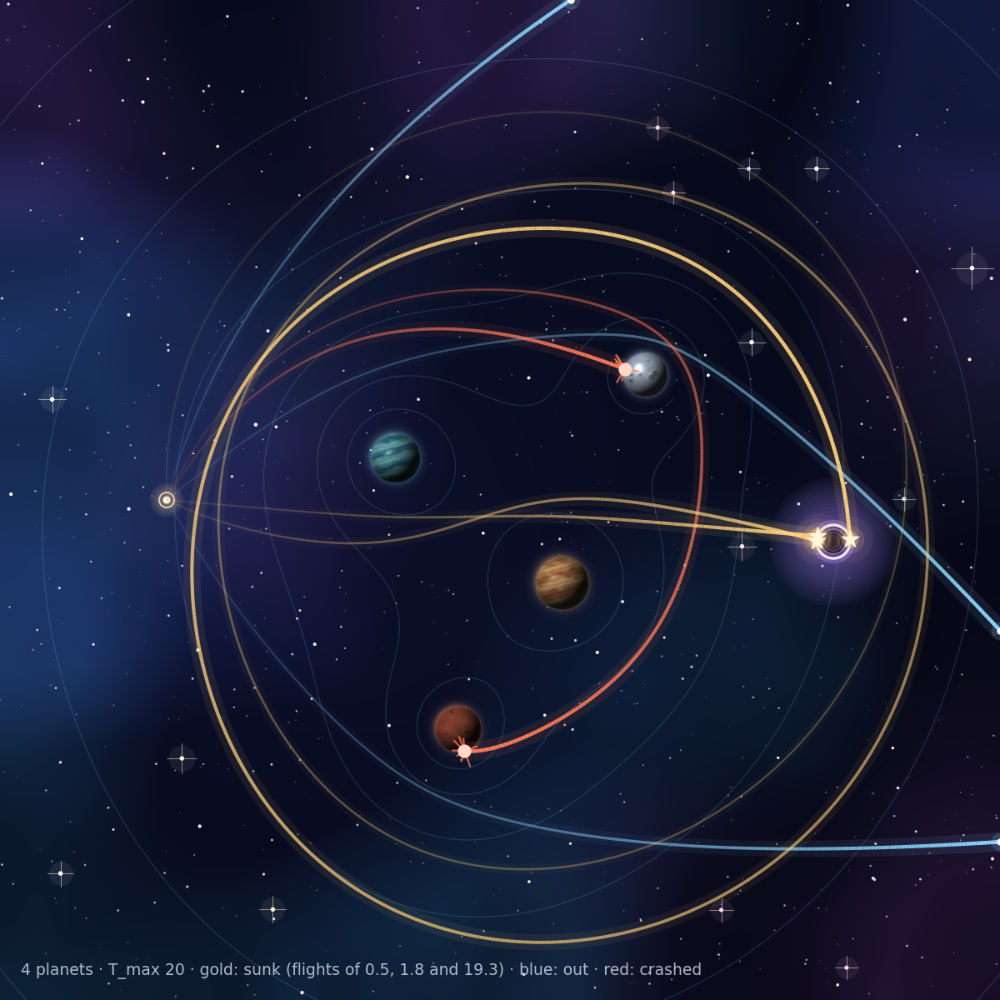
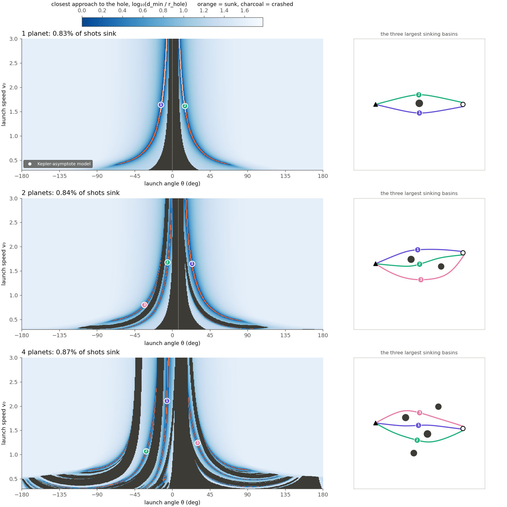
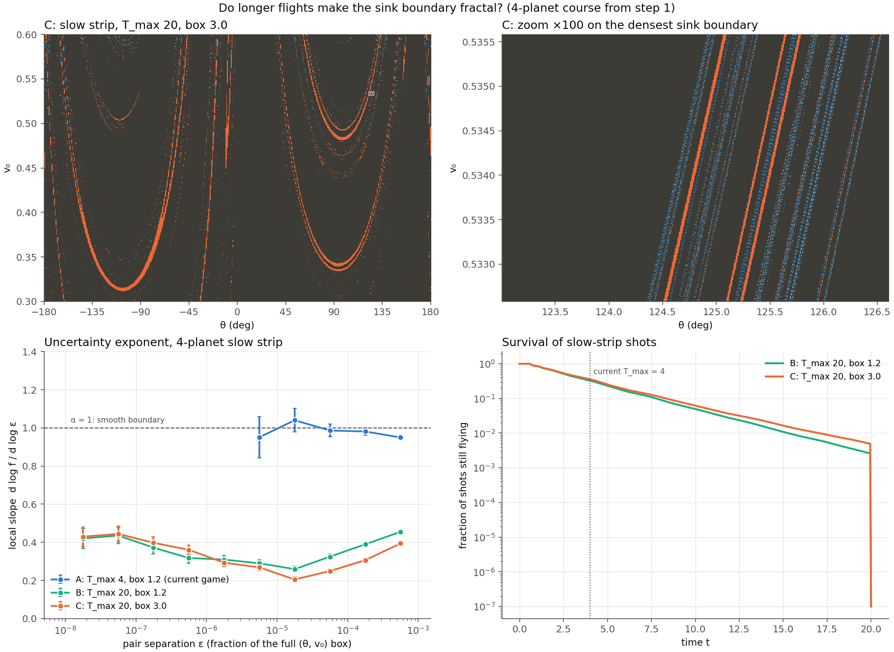
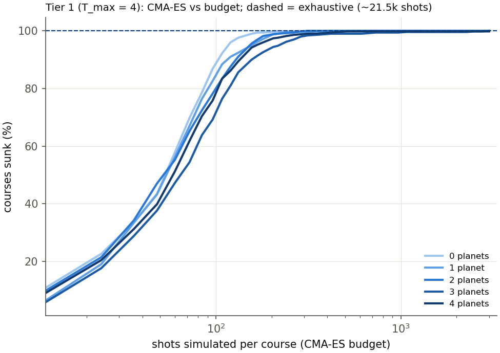
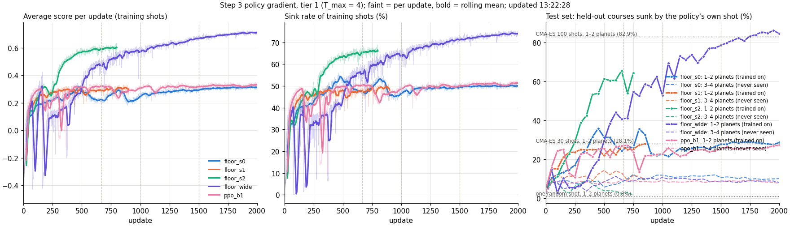
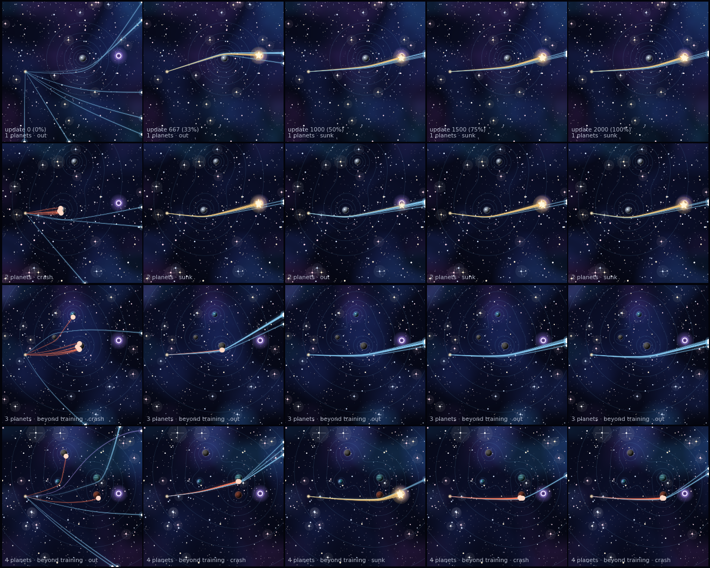
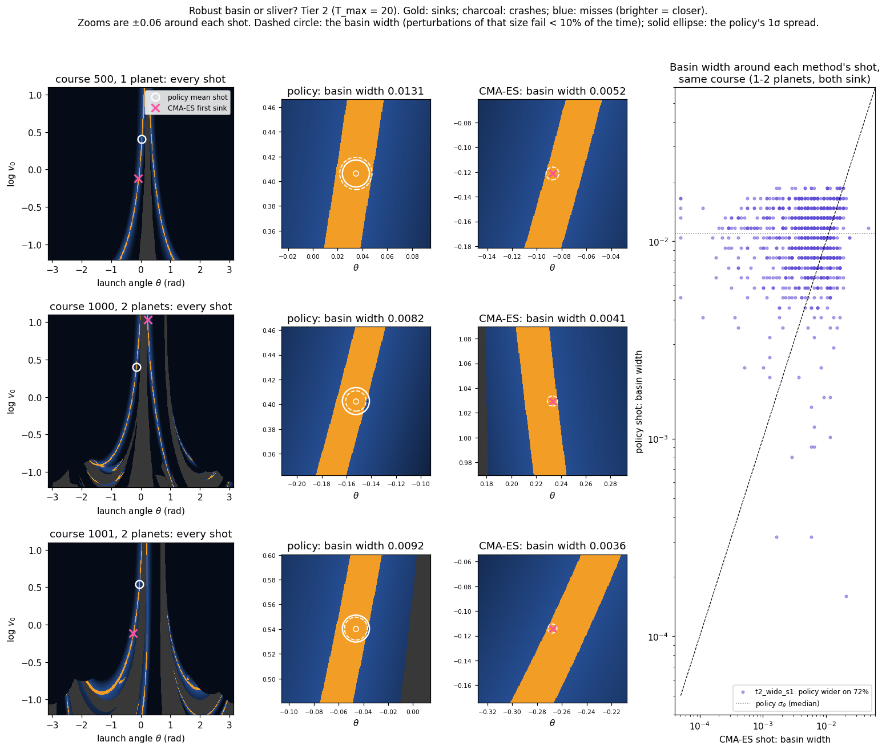
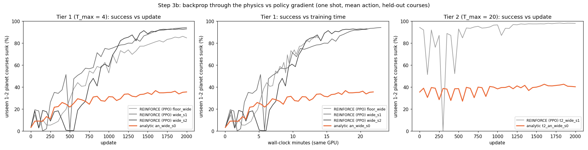

Can an agent learn to slingshot?
A ball, a hole, and a few planets in between. You get one launch, an angle and a speed, and gravity does the rest. Most courses can't be solved with a straight shot: the ball has to curve around one planet or swing past another. A careful optimizer needs about a hundred simulated shots per course to find a hole-in-one. A trained policy gets one.

The landscape of one course

Long flights make the boundary fractal

The baseline: search every course


An evolution-strategy optimizer (CMA-ES) searching each course from scratch sinks about 83% of 1–2 planet courses with 100 simulated shots, and nearly all of them by a few hundred. That is the bar for the policy, which sees the course once and has to shoot. All of these numbers use the short-flight game, where the landscape is smooth.
One shot from a trained policy
A neural network reads the course (planet positions and masses, the hole) and outputs one shot. It is trained by policy gradient on a stream of random courses, then tested on courses it has never seen.


Robust basins, and how the policy dodges the chaos
Trained further on the full game, where flights may last 20 time units and the long-flight landscape is fractal, the best network sinks 99.6% of unseen one-planet and 96% of two-planet courses with a single shot. CMA-ES needs about 300 simulated shots per course to match that. It never learned a slingshot. Every one of its sinks lands within 1.4 time units, well inside the smooth, short-flight part of the landscape. CMA-ES, which only looks for the first shot that works, finds 6–12% of its sinks on long, chaotic flights. Given the choice, the policy avoids the chaos.

Why not just differentiate the physics?
The simulator is ordinary array code, so the exact derivative of "how close did the ball come to the hole" with respect to the launch is available, and a network can be trained on it directly instead of by trial and error. It works poorly: 35% of unseen 1–2 planet courses, against 85–94% for policy gradient in the same training time. The gradients aren't noisy: independent batches agree almost perfectly. They're locally right and globally wrong. A shot that bends round the wrong side of a planet sits in a local minimum of the closest-approach distance, and following the gradient on that shot alone escapes only half the time. Policy gradient tries nearby shots at random and hops over those barriers. On the long, chaotic flights the gradients do blow up, but only for a minority of shots, and neither method's shots ever fly that long.

Coming
- more planetsA permutation-invariant network and a curriculum, so the policy handles more planets than it trained on.
- steeringA small fuel budget for thrust in flight, and the headline figure: success rate against simulations per course for every method.